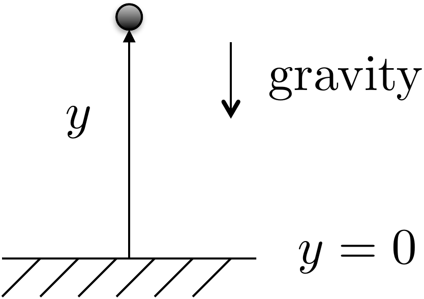
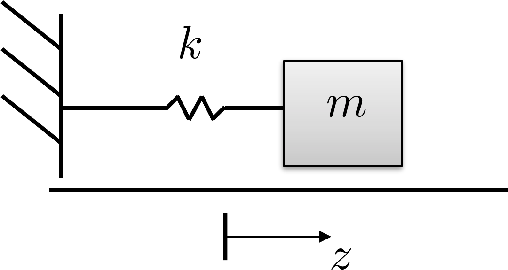
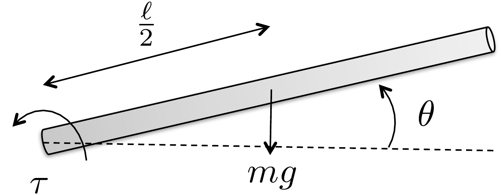
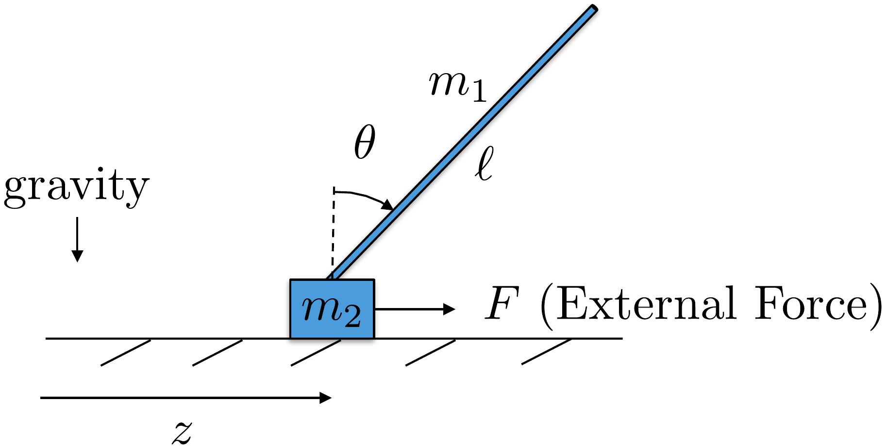

In this chapter we show how to define the potential energy for simple
mechanical systems and how to define the generalized forces. The
Euler-Lagrange equations given in
Equation 1.8
can then be used to derive the equations of motion for the system.
3.1.1 Potential Energy
In this book we will be concerned with two sources of potential
energy: potential energy due
to gravity and potential energy due to springs.

Figure 3.1. The potential energy of a unit mass m in gravity is given by P = mgy.
Consider a point mass \(m\) in a gravity field that is at position
\(y\) as shown in
Fig.3.1. The potential energy
is given by \[P = mgy + P_0,\] where
\(P_0\) is the potential energy when
\(y=0\). Typically, we desire an
expression for potential energy that is zero when the configuration
variables are zero.
The second source of potential energy is from translational and
rotational springs.

Figure 3.2. A spring stretched by distance z stores potential
energy.
The spring shown in
Fig.3.2 is stretched from rest
by a distance of \(z\). The potential
energy of a linear stretched/compressed spring is given by \[P = \frac{1}{2}k z^2,\] where \(k\) is the spring constant. Similarly, for
a rotational spring, the potential energy is given by \(P=\frac{1}{2}k \theta^2\), where \(\theta\) is the rotational angle and \(\theta=0\) is the angle at which the
rotational spring is at rest.
3.1.2 Generalized Coordinates and
Generalized Forces
The generalized coordinates are the minimum set of
configuration variables. For example, for the mass-spring-damper system
shown in
Fig.2.6, the generalized
coordinates are \(\mathbf{q}=(z_1,
z_2)^\top\). For the single-link robot arm shown in
Fig.2.8, the generalized
coordinate is \(\mathbf{q}=\theta\).
For the spinning dumbbell system shown in
Fig.2.7, and the pendulum on a
cart system shown in
Fig.2.9, the generalized
coordinates are \(\mathbf{q}=(z,
\theta)^\top\). Finally, for the satellite system shown in
Fig.1.4, the generalized
coordinates are \(\mathbf{q}=(\theta,\phi)^\top\).
The generalized forces are the
nonconservative forces and torques acting along each generalized
coordinate. In other words, they are the applied forces and torques on
the system. For example, for the mass-spring-damper system shown in
Fig.2.6, the generalized
force acting along \(z_1\) is zero and
the generalized force acting along \(z_2\) is the applied force \(F\). Therefore, the generalized force is
\(\boldsymbol{\tau} = (0,
F)^\top\).
3.1.3 Damping Forces and
Torques
Friction and applied dampers also exert forces on the system. Damping
forces are externally applied
forces that are proportional to the velocity or angular velocity of the
system. For example, in the mass-spring-damper system shown in
Fig.2.6, the damping force
acting along \(z_1\) is due to the
first damper and the damper between the two masses and is given by \(-b_1\dot{z}_1-b_2(\dot{z}_1-\dot{z}_2)\).
The damping acting along \(z_2\) is
given by \(-b_2(\dot{z}_2-\dot{z}_1)\).
Therefore, the damping force on the system is given by \[-B\dot{\mathbf{q}}
= -\begin{pmatrix} b_1+b_2 & -b_2 \\ -b_2 & b_2
\end{pmatrix} \begin{pmatrix} \dot{z}_1 \\ \dot{z}_2 \end{pmatrix}
= \begin{pmatrix} -b_1\dot{z}_1-b_2(\dot{z}_1-\dot{z}_2) \\
-b_2(\dot{z}_2-\dot{z}_1) \end{pmatrix}.\]
3.1.4 Euler-Lagrange Equations
The equations of motion are given by the Euler-Lagrange
equations. Let the
Lagrangian be given by \[L(\mathbf{q},\dot{\mathbf{q}}) =
K(\mathbf{q},\dot{\mathbf{q}}) - P(\mathbf{q}),\] where \(K(\mathbf{q},\dot{\mathbf{q}})\) is the
kinetic energy of the system and is, in general, a function of the
generalized coordinates and the generalized velocities, and \(P(\mathbf{q})\) is the potential energy
which is, in general, a function of the generalized coordinates. As
shown in Equation 1.8
the Euler-Lagrange equations are given in vector form as \[\frac{d}{dt}\left(\frac{\partial
L(\mathbf{q},\dot{\mathbf{q}})}{\partial \dot{\mathbf{q}}}\right) -
\frac{\partial L(\mathbf{q},\dot{\mathbf{q}})}{\partial \mathbf{q}} =
\boldsymbol{\tau}-B \dot{\mathbf{q}}.\]
Derive the equations of motion using the Euler-Lagrange
equations.
Referring to Appendices P.1, P.2, and P.3, write
a class or s-function that implements the equations of motion. Simulate
the system using a variable torque input. The output should connect to
the animation function developed in homework A.2.
Design Study A guided exercise
Build the arm equation of motion
Use the kinetic
energy from Chapter 2 and gravity potential energy for the center of
mass.

Use this geometry to relate the
center-of-mass height to \(\theta\)
before applying Euler-Lagrange.
Step 1. Potential energy
Show solution for Step
1
Answer:\(P=P_0+mg\ell\sin\theta/2\).
Step 2. Generalized coordinate and force
Show solution for
Step 2
Answer:\(q=\theta\), the applied torque is \(\tau\), and damping contributes \(-b\dot{\theta}\).
Step
3. Equation of motion
Enter the multiplier on \(\ddot{\theta}\) in the final
equation.
The complete solution includes a dynamics
class and a simulation script. Before opening it, outline each component
separately.
These prompts
are ungraded. They are intended to connect the Euler-Lagrange equation
to the implementation code in the complete solution.
Complete solution
Figure 3.3. Energy calculation for the single-link
robot arm
Let \(P_0\) be the potential when
\(\theta=0\). The height of the center
of mass is \(\ell/2 \sin\theta\), which
is zero when \(\theta=0\). Accordingly,
the potential energy is given by \[P = P_0 +
mg \frac{\ell}{2} \sin\theta.\] The generalized coordinate is
\[q_1= \theta.\] The generalized force
is \[\tau_1=\tau,\] and the
generalized damping is \[-B\dot{\mathbf{q}} =
- b\dot{\theta}.\] From Homework 3.1.2 we found
that the kinetic energy is given by \[K=\frac{1}{2}\left(\frac{m\ell^2}{3}\right)\dot{\theta}^2.\]
Therefore, the Lagrangian is \[L = K - P =
\frac{1}{2}\left(\frac{m\ell^2}{3}\right)\dot{\theta}^2 - P_0 -
mg\frac{\ell}{2} \sin\theta.\] For this case, the Euler-Lagrange
equation is given by \[\frac{d}{dt}\left(\frac{\partial L}{\partial
\dot{\theta}}\right) - \frac{\partial L}{\partial \theta} = \tau_1 -
b\dot{\theta}\] where \[\begin{aligned}
\frac{d}{dt}\left(\frac{\partial L}{\partial \dot{\theta}}\right) &=
\frac{d}{dt}\left(\frac{m\ell^2}{3}\dot{\theta}\right) =
\frac{m\ell^2}{3}\ddot{\theta} \\
\frac{\partial L}{\partial \theta} &= -mg\frac{\ell}{2}\cos\theta.
\end{aligned}\] Therefore, the Euler-Lagrange equation becomes
\[\tag{3.1}
\frac{m\ell^2}{3}\ddot{\theta} + mg\frac{\ell}{2}\cos\theta = \tau -
b\dot{\theta}.\]
A Python class that implements the dynamics of the single link robot
arm is shown below.
# 3rd-partyimport numpy as np# local (controlbook)from . import params as Pfrom ..common.dynamics_base import DynamicsBaseclass ArmDynamics(DynamicsBase):def__init__(self, alpha=0.0):super().__init__(# Initial state conditions state0=np.array([P.theta0, P.thetadot0]),# Input torque limits u_max=P.tau_max, u_min=-P.tau_max,# Time step for integration dt=P.ts, )# see params.py/textbook for details on these parametersself.m =self.randomize_parameter(P.m, alpha)self.ell =self.randomize_parameter(P.ell, alpha)self.b =self.randomize_parameter(P.b, alpha)self.g = P.g # gravity constant is well known, so not randomizeddef f(self, x, u):# Return xdot = f(x,u), the system state update equations# re-label states for readability theta, thetadot = x.flatten() torque = u.flatten()[0] inertia =self.m *self.ell**2/3 friction =self.b * thetadot weight_moment =self.m *self.g *self.ell /2.0* np.cos(theta) thetaddot = (torque - friction - weight_moment) / inertia xdot = np.array([thetadot, thetaddot])return xdotdef h(self):# return the output equations# could also use input u if needed theta =self.state[0] y = np.array([theta])return y
Code that simulates the dynamics is given below.
# 3rd-partyimport numpy as np# local (controlbook)import case_studies.A_arm.params as Pfrom case_studies.A_arm.dynamics import ArmDynamicsfrom case_studies.A_arm.visualizer import ArmVisualizerfrom case_studies.common.signal_generator import SignalGenerator# initialize system and input generatorarm = ArmDynamics()torque_gen = SignalGenerator(amplitude=0.2, frequency=0.05)# initialize data storagex_hist = [arm.state]u_hist = []# loop over timetime = np.arange(start=0.0, stop=50.0, step=P.ts, dtype=np.float64)for t in time[1:]:# generate input signal u = np.array([torque_gen.square(t)])# simulate system response y = arm.update(u)# store data for visualization u_hist.append(u) x_hist.append(arm.state)# convert data to numpy arraysx_hist = np.array(x_hist)u_hist = np.array(u_hist)# visualizeviz = ArmVisualizer(time, x_hist, u_hist)viz.animate() # could also just call viz.plot()
Complete simulation code for MATLAB, Python, and Simulink can be
downloaded at http://controlbook.byu.edu.
Derive the equations of motion using the Euler-Lagrange
equations.
Referring to Appendices P.1, P.2, and P.3, write
a class for s-function that implements the equations of motion. Simulate
the system using a variable force on the cart as an input. The output
should connect to the animation function developed in homework B.2.
Design
Study B guided exercise
Assemble the pendulum equations of
motion
Use energy, generalized coordinates, and generalized
forces to form the coupled nonlinear equations.

Use this
setup to connect gravity, force, cart motion, and pendulum angle before
applying Euler-Lagrange.
Step 1. Potential energy
Show solution for Step
1
Answer: The rod center of mass
height gives P = P0 + m1 g ell/2 (cos(theta)-1).
Step 2. Generalized coordinates
Show solution for
Step 2
Answer: The generalized
coordinates are z and theta, with generalized force (F,
0)\^T.
Step 3.
Coupled dynamics structure
Show
solution for Step 3
Answer: The
result is a 2 by 2 coupled mass-matrix equation; damping acts in the z
direction.
Pseudocode
The complete solution includes a dynamics
class and a simulation script. Before opening it, outline each component
separately.
These
prompts are ungraded. They are intended to connect the derivation to the
implementation code in the complete solution.
Complete solution
Figure 3.4. Pendulum on a cart.
Let \(P_0\) be the potential energy
when \(\theta=0\) and \(z=0\). Then the potential energy of the
pendulum system is given by \[P = P_0 + m_1 g
\frac{\ell}{2} (\cos\theta-1),\] where \(\frac{\ell}{2}\cos\theta\) is the height of
the center of mass of the rod. Note that the potential energy decreases
as \(\theta\) increases.
The generalized coordinates for the system are the horizontal
position \(z\) and the angle \(\theta\). Therefore, let \(\mathbf{q} = (z, \theta)^\top\).
The external force acting in the direction of \(z\) is \(\tau_1 =
F\), and the external torque acting in the direction of \(\theta\) is \(\tau_2=0\). Therefore, the generalized
forces are \(\boldsymbol{\tau}=(F,
0)^\top\). A damping term acts in the direction of \(z\), which implies that \(-B\dot{\mathbf{q}} = (-b\dot{z},
0)^\top\).
Using Equation 2.4,
the kinetic energy can be written in terms of the generalized
coordinates as \[\begin{aligned}
K(\mathbf{q},\dot{\mathbf{q}}) &= \frac{1}{2}(m_1+m_2)\dot{z}^2 +
\frac{1}{2}m_1\frac{\ell^2}{3}\dot{\theta}^2 +
m_1\frac{\ell}{2}\dot{z}\dot{\theta}\cos\theta \\
&= \frac{1}{2}(m_1+m_2)\dot{q}_1^2 +
\frac{1}{2}m_1\frac{\ell^2}{3}\dot{q}_2^2 +
m_1\frac{\ell}{2}\dot{q}_1\dot{q}_2\cos q_2,
\end{aligned}\] and the potential energy can be written as \[\begin{aligned}
P(\mathbf{q}) &= P_0 + m_1 g \frac{\ell}{2}(\cos\theta-1)\\
&= P_0 + m_1 g \frac{\ell}{2}(\cos q_2-1).
\end{aligned}\] The Lagrangian is therefore given by \[L(\mathbf{q},\dot{\mathbf{q}}) =
\frac{1}{2}(m_1+m_2)\dot{q}_1^2 +
\frac{1}{2}m_1\frac{\ell^2}{3}\dot{q}_2^2 +
m_1\frac{\ell}{2}\dot{q}_1\dot{q}_2\cos q_2- P_0 - m_1 g
\frac{\ell}{2}(\cos q_2-1).\] Therefore \[\begin{aligned}
\frac{\partial L}{\partial\dot{\mathbf{q}}} &= \begin{pmatrix}
(m_1+m_2)\dot{z} + m_1\frac{\ell}{2}\dot{\theta}\cos\theta \\
m_1\frac{\ell^2}{3}\dot{\theta} + m_1\frac{\ell}{2}\dot{z}\cos\theta
\end{pmatrix} \\
\frac{\partial L}{\partial\mathbf{q}} &= \begin{pmatrix}
0 \\ -m_1\frac{\ell}{2}\dot{z}\dot{\theta}\sin\theta + m_1 g
\frac{\ell}{2} \sin\theta
\end{pmatrix}.
\end{aligned}\] Differentiating \(\frac{\partial L}{\partial
\dot{\mathbf{q}}}\) with respect to time gives \[\frac{d}{dt}\left(\frac{\partial L}{\partial
\dot{\mathbf{q}}}\right) = \begin{pmatrix}
(m_1+m_2)\ddot{z} + m_1 \frac{\ell}{2} \ddot{\theta}\cos\theta - m_1
\frac{\ell}{2} \dot{\theta}^2\sin\theta \\
m_1 \frac{\ell^2}{3} \ddot{\theta} + m_1 \frac{\ell}{2}
\ddot{z}\cos\theta - m_1 \frac{\ell}{2} \dot{z}\dot{\theta}\sin\theta
\end{pmatrix}.\] Therefore, the Euler-Lagrange equation \[\frac{d}{dt}\left(\frac{\partial
L}{\partial\dot{\mathbf{q}}} \right) - \frac{\partial L}{\partial
\mathbf{q}} = \boldsymbol{\tau}-B\dot{\mathbf{q}}\] gives \[\begin{aligned}
(m_1+m_2)\ddot{z} + m_1 \frac{\ell}{2} \ddot{\theta}\cos\theta - m_1
\frac{\ell}{2} \dot{\theta}^2\sin\theta &= F - b\dot{z} \\
m_1 \frac{\ell^2}{3} \ddot{\theta} + m_1 \frac{\ell}{2}
\ddot{z}\cos\theta - m_1 \frac{\ell}{2} \dot{z}\dot{\theta}\sin\theta +
m_1\frac{\ell}{2}\dot{z}\dot{\theta}\sin\theta - m_1 g \frac{\ell}{2}
\sin\theta &= 0.
\end{aligned}\] Simplifying and moving all second-order
derivatives to the left-hand side, and all other terms to the right-hand
side gives \[\begin{pmatrix}
(m_1+m_2)\ddot{z} + m_1 \frac{\ell}{2} \ddot{\theta}\cos\theta \\
m_1 \frac{\ell^2}{3} \ddot{\theta} + m_1 \frac{\ell}{2}
\ddot{z}\cos\theta
\end{pmatrix}
= \begin{pmatrix} m_1 \frac{\ell}{2} \dot{\theta}^2\sin\theta + F
-b\dot{z} \\ m_1 g \frac{\ell}{2} \sin\theta \end{pmatrix}.\]
Using matrix notation, this equation can be rearranged to isolate the
second-order derivatives on the left-hand side as \[\tag{3.2}
\begin{pmatrix}
(m_1+m_2) & m_1 \frac{\ell}{2} \cos\theta \\
m_1 \frac{\ell}{2} \cos\theta & m_1 \frac{\ell^2}{3}
\end{pmatrix} \begin{pmatrix}\ddot{z} \\ \ddot{\theta} \end{pmatrix}
= \begin{pmatrix} m_1 \frac{\ell}{2} \dot{\theta}^2\sin\theta + F
-b\dot{z} \\ m_1 g \frac{\ell}{2} \sin\theta \end{pmatrix}.\]
Equation 3.2
represents the simulation model for the pendulum on a cart system.
A Python class that implements the dynamics of the pendulum is shown
below
# 3rd-partyimport numpy as np# local (controlbook)from . import params as Pfrom ..common.dynamics_base import DynamicsBaseclass CartPendulumDynamics(DynamicsBase):def__init__(self, alpha=0.0):super().__init__(# Initial state conditions state0=np.array([P.z0, P.theta0, P.zdot0, P.thetadot0]),# Input force limits u_max=P.force_max, u_min=-P.force_max,# Time step for integration dt=P.ts, )# see params.py/textbook for details on these parameters# parameter randomization is used after Chapter TODO:# you do not need to include it before thenself.m1 =self.randomize_parameter(P.m1, alpha) # pendulumself.m2 =self.randomize_parameter(P.m2, alpha) # cartself.ell =self.randomize_parameter(P.ell, alpha)self.b =self.randomize_parameter(P.b, alpha)self.g = P.g # gravity constant is well known, so not randomizeddef f(self, x, u):""" Return xdot = f(x,u). """# re-label states and inputs for readability z, theta, zdot, thetadot = x.flatten() force = u.flatten()[0]# TODO: decide whether to label terms like this moment_arm =self.m1 *self.ell /2.0 mass =self.m1 +self.m2 rotational_inertia =self.m1 *self.ell**2/3 M12 = moment_arm * np.cos(theta) M = np.array([[mass, M12], # fmt: skip [M12, rotational_inertia]]) # fmt: skip friction =self.b * zdot weight_moment = moment_arm *self.g * np.sin(theta) tmp = moment_arm * thetadot**2* np.sin(theta) c = np.array([tmp + force - friction, weight_moment]) zddot, thetaddot = np.linalg.solve(M, c) xdot = np.array([zdot, thetadot, zddot, thetaddot])return xdotdef h(self):""" Return the output y = h(x). """# y = P.Cm @ self.state y =self.state[:2].copy() # measure position states onlyreturn y
The Python code that simulates the dynamics is given below.
# 3rd-partyimport numpy as np# local (controlbook)import case_studies.B_pendulum.params as Pfrom case_studies.B_pendulum.dynamics import CartPendulumDynamicsfrom case_studies.B_pendulum.visualizer import CartPendulumVisualizerfrom case_studies.common.signal_generator import SignalGenerator# initialize system and input generatorpendulum = CartPendulumDynamics()force_gen = SignalGenerator(amplitude=1.0, frequency=1.0)# initialize data storagex_hist = [pendulum.state]u_hist = []# loop over timetime = np.arange(start=0.0, stop=15.0, step=P.ts, dtype=np.float64)for t in time[1:]:# generate input signal u = np.array([force_gen.sin(t)])# simulate system response y = pendulum.update(u)# store data for visualization u_hist.append(u) x_hist.append(pendulum.state)# convert data to numpy arraysx_hist = np.array(x_hist)u_hist = np.array(u_hist)# visualizeviz = CartPendulumVisualizer(time, x_hist, u_hist)viz.animate() # could also just call viz.plot()
Complete simulation code for MATLAB, Python, and Simulink can be
downloaded at http://controlbook.byu.edu.
Derive the equations of motion using the Euler-Lagrange
equations.
Referring to Appendices P.1, P.2, and P.3, write
a class or s-function that implements the equations of motion. Simulate
the system using a variable torque on the body as an input. The output
should connect to the animation function developed in homework C.2.
Design Study C guided exercise
Assemble the satellite equations of motion
Use the
torsional spring, relative damping, body torque, and two angular
coordinates to form the coupled satellite-panel equations.
The
spring and damper act on relative motion between the body and panel,
while the actuator torque is applied only to the body.
Step 1.
Potential energy
Show solution for Step
1
Answer:\(P=\frac{1}{2}k(\phi-\theta)^2\). The squared term
means \(\theta-\phi\) gives the
same stored energy.
Step 2. Generalized coordinates and input
Show solution for
Step 2
Answer:\(q=(\theta,\phi)^T\), and the generalized force is
\((\tau,0)^T\).
Step
3. Relative damping
Show solution for Step
3
Answer: The body equation
contains \(-b(\dot{\theta}-\dot{\phi})\), and the panel equation
contains \(-b(\dot{\phi}-\dot{\theta})\).
Step 4.
Coupled equation structure
Show
solution for Step 4
Answer: The
equations form a 2 by 2 second-order model. Torque appears directly in
the \(\theta\) equation; the panel
moves through spring and damping coupling.
Pseudocode
The complete solution includes dynamics
code. Before opening it, outline how the code should compute \(\ddot{\theta}\) and \(\ddot{\phi}\) from state and torque.
This
prompt is ungraded. It connects the Euler-Lagrange equations to the
implementation code in the complete solution.
Complete solution
Figure 3.5. Satellite with flexible solar
panels.
The generalized coordinates for the satellite attitude control
problem are the angles \(\theta\) and
\(\phi\). Therefore, we define the
generalized coordinates as \(\mathbf{q}=(\theta, \phi)^\top\). We will
assume the ability to apply torque on the main body (\(\theta\)) of the satellite, but not on the
solar panel. Therefore, the generalized force is \(\boldsymbol{\tau} = (\tau, 0)^\top\). We
will model the dissipation (friction) forces as proportional to the
relative motion between the main body and the solar panel. Therefore,
the damping term is given by \[-B\dot{\mathbf{q}} =
\begin{pmatrix}-b(\dot{\theta}-\dot{\phi}) \\
-b(\dot{\phi}-\dot{\theta}) \end{pmatrix} = -\begin{pmatrix} b & -b
\\ -b & b \end{pmatrix}\begin{pmatrix}\dot{\theta} \\
\dot{\phi}\end{pmatrix}.\]
Using Equation 2.5,
the kinetic energy can be written in terms of the generalized
coordinates as \[\begin{aligned}
K(\mathbf{q},\dot{\mathbf{q}}) &= \frac{1}{2} J_s \dot{\theta}^2 +
\frac{1}{2} J_p \dot{\phi}^2 \\
&= \frac{1}{2} J_s \dot{q}_1^2 + \frac{1}{2} J_p \dot{q}_2^2.
\end{aligned}\] The potential energy of the system is due to the
spring force between the base and the solar panel, and is given by \[\begin{aligned}
P(\mathbf{q}) &= \frac{1}{2} k (\phi-\theta)^2 \\
&= \frac{1}{2} k (q_2-q_1)^2,
\end{aligned}\] where \(k\) is
the spring constant. The Lagrangian is therefore given by \[L(\mathbf{q},\dot{\mathbf{q}}) = \frac{1}{2} J_s
\dot{q}_1^2 + \frac{1}{2} J_p \dot{q}_2^2 - \frac{1}{2} k
(q_2-q_1)^2.\] Therefore \[\begin{aligned}
\frac{\partial L}{\partial\dot{\mathbf{q}}} &= \begin{pmatrix}
J_s\dot{\theta} \\
J_p\dot{\phi}
\end{pmatrix} \\
\frac{\partial L}{\partial\mathbf{q}} &= \begin{pmatrix}
k(\phi-\theta) \\
-k(\phi-\theta)
\end{pmatrix}.
\end{aligned}\] Differentiating \(\frac{\partial L}{\partial
\dot{\mathbf{q}}}\) with respect to time gives \[\frac{d}{dt}\left(\frac{\partial L}{\partial
\dot{\mathbf{q}}}\right) = \begin{pmatrix}
J_s\ddot{\theta} \\
J_p\ddot{\phi}
\end{pmatrix}.\] Therefore, the Euler-Lagrange equation \[\frac{d}{dt}\left(\frac{\partial
L}{\partial\dot{\mathbf{q}}} \right) - \frac{\partial L}{\partial
\mathbf{q}} = \boldsymbol{\tau} -B\dot{\mathbf{q}}\] gives \[\begin{pmatrix}
J_s\ddot{\theta} - k(\phi-\theta) \\
J_p\ddot{\phi} + k(\phi-\theta)
\end{pmatrix}
= \begin{pmatrix} \tau \\ 0 \end{pmatrix} + \begin{pmatrix}
-b(\dot{\theta}-\dot{\phi}) \\ -b(\dot{\phi}-\dot{\theta})
\end{pmatrix}.\] Simplifying and moving all second-order
derivatives to the left-hand side, and all other terms to the right-hand
side gives \[\begin{pmatrix}
J_s\ddot{\theta} \\
J_p\ddot{\phi}
\end{pmatrix}
= \begin{pmatrix} \tau -b(\dot{\theta}-\dot{\phi})-k(\theta-\phi) \\
-b(\dot{\phi}-\dot{\theta}) - k(\phi-\theta) \end{pmatrix}.\]
Using matrix notation, this equation can be rearranged to isolate the
second-order derivatives on the left-hand side as \[\tag{3.3}
\begin{pmatrix}
J_s & 0 \\
0 & J_p
\end{pmatrix} \begin{pmatrix}\ddot{\theta} \\ \ddot{\phi} \end{pmatrix}
= \begin{pmatrix} \tau-b(\dot{\theta}-\dot{\phi})-k(\theta-\phi) \\
-b(\dot{\phi}-\dot{\theta}) - k(\phi-\theta) \end{pmatrix}.\]
Equation 3.3
represents the simulation model for the simplified satellite system.
A Python class that implements the dynamics of the satellite is shown
below
# 3rd-partyimport numpy as np# local (controlbook)from . import params as Pfrom ..common.dynamics_base import DynamicsBaseclass SatelliteDynamics(DynamicsBase):def__init__(self, alpha=0.0):super().__init__(# Initial state conditions state0=np.array([P.theta0, P.phi0, P.thetadot0, P.phidot0]),# Input limits u_max=P.torque_max, u_min=-P.torque_max,# Time step for integration dt=P.ts, )# see params.py/textbook for details on these parameters# parameter randomization is used after Chapter TODO:# you do not need to include it before thenself.Js =self.randomize_parameter(P.Js, alpha)self.Jp =self.randomize_parameter(P.Jp, alpha)self.k =self.randomize_parameter(P.k, alpha)self.b =self.randomize_parameter(P.b, alpha)def f(self, x, u):""" Return xdot = f(x,u). """# re-label states and inputs for readability theta, phi, thetadot, phidot = x.flatten() tau = u.flatten()[0] friction =self.b * (thetadot - phidot) spring_torque =self.k * (theta - phi) M = np.diag([self.Js, self.Jp]) c = np.array([tau - friction - spring_torque, friction + spring_torque]) thetaddot, phiddot = np.linalg.solve(M, c) xdot = np.array([thetadot, phidot, thetaddot, phiddot])return xdotdef h(self):""" Return the output y = h(x). """ theta, phi =self.state[:2] y = np.array([theta, phi]) # measure position states onlyreturn y
Code that simulates the dynamics is given below.
# 3rd-partyimport numpy as np# local (controlbook)import case_studies.C_satellite.params as Pfrom case_studies.C_satellite.dynamics import SatelliteDynamicsfrom case_studies.C_satellite.visualizer import SatelliteVisualizerfrom case_studies.common.signal_generator import SignalGenerator# initialize system and input generatorsatellite = SatelliteDynamics()torque_gen = SignalGenerator(amplitude=0.1, frequency=0.1)# initialize data storagex_hist = [satellite.state]u_hist = []# loop over timetime = np.arange(start=0.0, stop=25.0, step=P.ts, dtype=np.float64)for t in time[1:]:# generate input signal u = np.array([torque_gen.sin(t)])# simulate system y = satellite.update(u)# store data for visualization u_hist.append(u) x_hist.append(satellite.state)# convert data to numpy arraysx_hist = np.array(x_hist)u_hist = np.array(u_hist)# visualizeviz = SatelliteVisualizer(time, x_hist, u_hist)viz.animate() # could also just call viz.plot()
Complete simulation code for MATLAB, Python, and Simulink can be
downloaded at http://controlbook.byu.edu.
3.5 Interactive Euler-Lagrange
Check
Chapter 3 activity
From energy to Lagrangian terms
Use a one-coordinate mass-spring example to connect kinetic energy,
potential energy, the Lagrangian L = K - P, and the spring force term.
Figure 1.2.
A one-coordinate mass-spring system with generalized coordinate q and
generalized velocity q.
Live equations
P(q) = ½ k q2 =
½()()2
= J
K(q) = ½ m
q2 =
½()()2
= J
L(q,q) = K - P =
J
dP⁄dq = k q =
N
3.6 Knowledge Check
Q1.
Lagrangian definition
The Lagrangian
is:
Q2. Generalized
coordinates
Generalized coordinates
should be:
Q3. Spring potential
For k = 4 and displacement q = 2, enter the potential energy P.
Show solution
Answer: 8 because P = ½kq2 =
½(4)(22) = 8.
Q4. Potential derivative
For P = ½kq2, with k = 3 and q = 2, enter
dP⁄dq.
Show solution
Answer: 6 because
dP⁄dq = kq =
(3)(2).
Q5. Toy system: warehouse cart and flywheel
Consider the warehouse cart and flywheel system from
Chapter 2 Q5. The cart
translates horizontally, and the flywheel rotates relative to the cart.
For this Chapter 3 version, assume the cart is attached to a linear
spring with displacement z from its relaxed position, and the flywheel
is attached to a torsional spring with angle θ from its relaxed angle.
Which potential energy expression is correct?
Q6. Toy system: puck and
rotor
Consider the puck-and-rotor
system from Chapter 2
Q6. The puck slides along a horizontal surface, and the rotor
spins on top of the puck. To describe the configuration, use x for the
puck's horizontal position and θ for the rotor's angular position.
Which set is the best choice of generalized coordinates?
Q7. Toy system:
Lagrangian form
For either toy system
with translation and rotation, which Lagrangian form is correct?
Q8.
Coordinate choice
A slider moves
horizontally while a rigid link rotates relative to the slider. Which
generalized coordinates are most appropriate?
Q9. Potential energy structure
A point mass has height y and stretches a spring
by x from its relaxed length. Which potential-energy structure is
correct?
Q10. Generalized force
For q = (θ, x), a positive torque τ is
applied directly in the positive θ direction and no direct force
is applied in x. What generalized-force vector is consistent with this
description?
Q11. Euler-Lagrange
term
Which term most directly comes
from d/dt(partial L / partial qdot) in a one-coordinate mass-spring
model?
Q12. Coupled motion
Why can
products such as xdot times thetadot appear in Euler-Lagrange equations
for a multi-coordinate mechanical system?
3.7 Notes and References
Derivations of the Euler-Lagrange equations can be found in many
sources, including [1, 2]. A simple derivation using only calculus can
be found in [3].